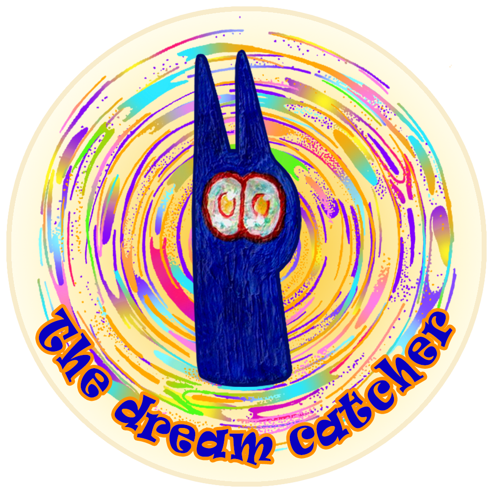
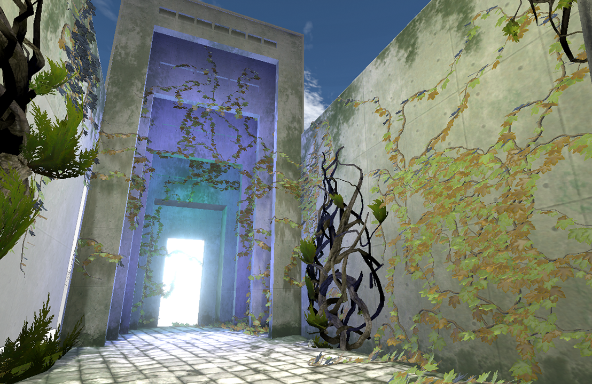
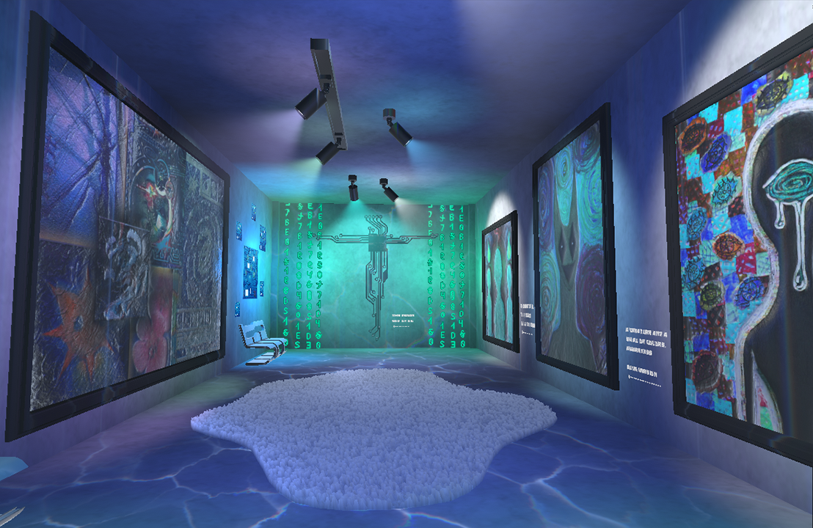
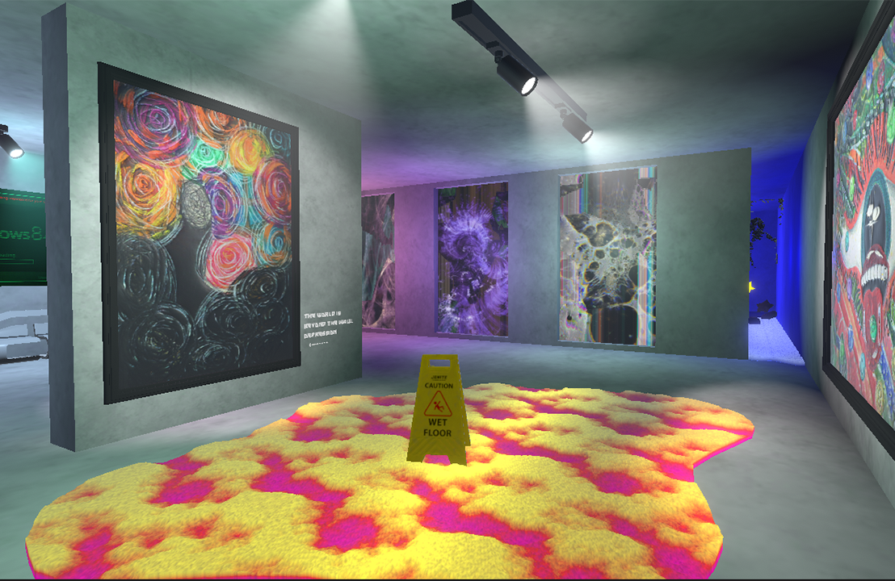
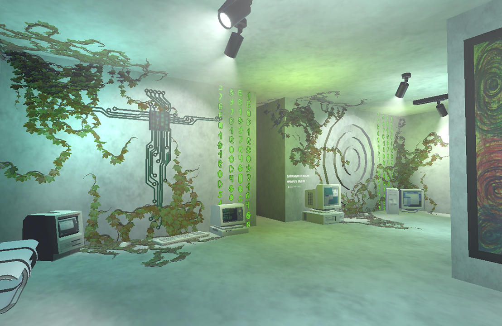
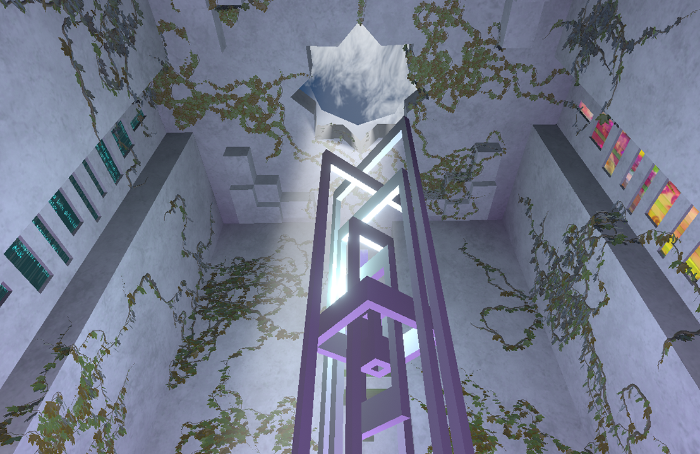
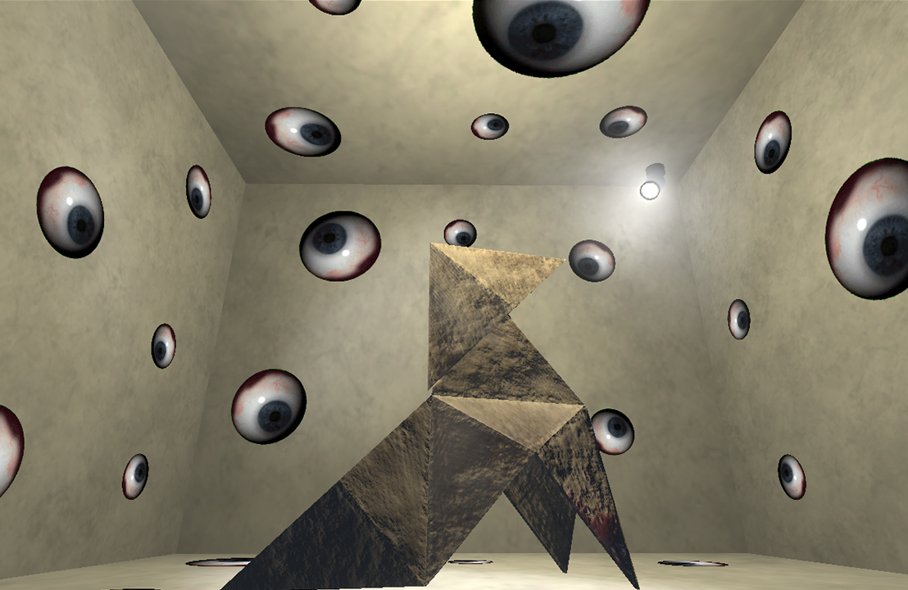
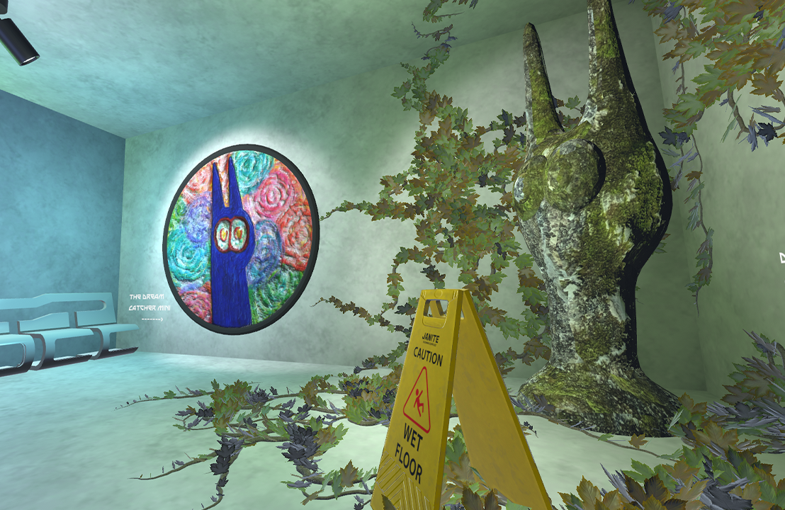
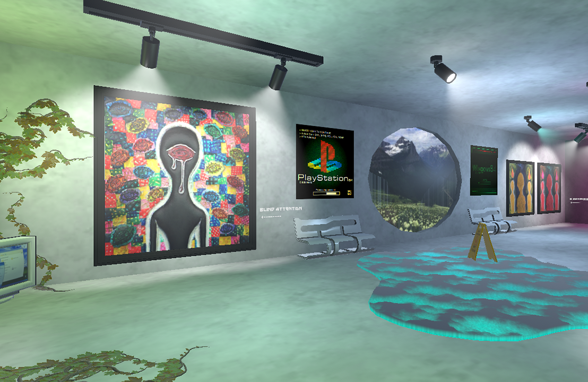

Performed:
the project was made by sun_night
Markiv Zlata student of grade 11
NGTU UNIVERSITY 2026

Scientific advisers:
Yunusbaev Ramazan Sibagatovich,
Litvinova Olesya Viktorovna,
IT-teacher, English teacher
"The Dream Catcher" -
Welcome to the Virtual Gallery "The Dream Catcher"! I invite you to plunge into a fascinating journey through time and creativity. Here are my paintings, written at different stages
of life, each of which carries an individual meaning, discovered for your own opinion. Regardless of whether you prefer realistic images or abstract compositions, you will find something interesting for yourself here.
The Gallery "The Dream Catcher" is not just a virtual space, it is a place for inspiration, communication and joint research of the world of art. Come here with friends, explore the gallery, share your feelings and discuss
the impressions of what you see. This project is a reflection of my creative path, my hobbies and deep internal experiences.
Описание:
Добро пожаловать в виртуальную галерею «Сны»! Я приглашаю вас погрузиться в увлекательное путешествие сквозь время и творчество. Здесь представлены мои картины, написанные на разных этапах жизни, каждая из которых несёт в себе индивидуальный смысл, открытый для вашего собственного восприятия. Независимо от того, предпочитаете ли вы реалистичные изображения или абстрактные композиции, вы найдёте здесь что-то интересное для себя. Галерея «Ловец снов» — это не просто виртуальное пространство, это место для вдохновения, общения и совместного исследования мира искусства. Приходите сюда с друзьями, изучайте галерею, делитесь своими чувствами и обсуждайте впечатления от увиденного. Этот проект — отражение моего творческого пути, моих увлечений и глубоких внутренних переживаний.
Visit the project
All rights to paintings, exhibitions, logo and the name of the Gallery "The Dream Catcher" belong to sun_night (Zlata Markiv).
The virtual space is located on the VRChat platform. -> HERE







